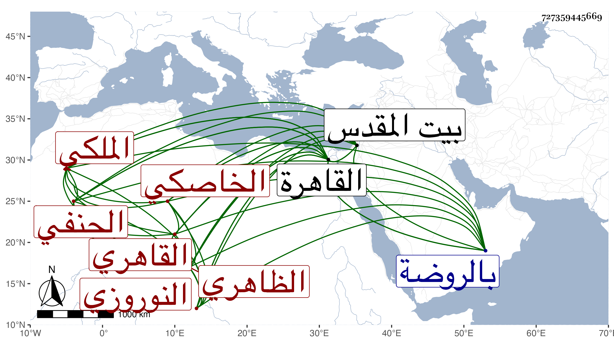

0902Sakhawi.DawLamic.ITO20230111-ara1.EIS1600.727359445669
Biography ID: 727359445669
696
خضر بن شماف أو شوماف الزين أبو الحياة النوروزي الخاصكي الملكي الظاهري أبوه القاهري الحنفي الآتي أبوه . ولد في سنة خمس وثلاثين وثمانمائة بالقاهرة ونشأ بها في كنف أبويه فحفظ القرآن وغيره واشتغل على تنم الفقيه ولازمه في العربية والصرف والفقه وغير ذلك ثم نقله لشيخه ملا شيخ وكان حينئذ بالقاهرة فقرأ عليه الصرف وفي شرح الارشاد في النحو وفي شرح الدرر كلاهما من تأليفه وقرأ على العز عبد السلام البغدادي شرح المنار في الأصول للاقصرائي وحمل عنه الشفا ما بين قراءة وسماع بقراءته له على الشرف بن الكويك ، وكذا سمع عليه غيره وحضر عند ابن الهمام وسيف الدين ، وقرأ على الشهاب بن العطار في البخاري وغيره بل سمع على شيخنا بجامع عمرو ، وحج وزار بيت المقدس واستقر خازن الكتب بالصرغتمشية وصحب التاج بن المقسي وغيره وعرف بلطف العشرة والكياسة مع فضيلة وتفنن ، وكان الدوادار يشبك من مهدي لمصاهرته لجانم دواداره يصغي إليه لمحبته له وبعده انجمع غالبا في خزانة الكتب المشار إليها ، وفي مسكنه بالروضة وغيرهما وأعرض عن تلك الأمور وتكرر جلوسي معه ، واتفق انه خطبني مرة لرؤية كتب الخزانة وعرضها علي واحدا واحدا ، وكان من جملتها فيما أظن كتاب البدائع للكاساني وأظهر تألما لفقد مجلد منه وفارقته فلم ألبث أن حضر إلى ناسخ كان يقرأ علي وشكى لي أن ناصر الدين النبراوي مات وله عنده أجرة نسخ وعنده مجلد كان يكتب منه وأخره رجاء التوصل به لأجرته فطلبته منه فكان المجلد المشار إليه فأمرته بالتوجه به لصاحب الترجمة ففعل وأنعم عليه بدينار فكان ذلك بحسن نيته فيما يظهر ، ولم يزل على طريقته حتى انقطع متعللا نحو سنة أو أكثر ثم مات في يوم الثلاثاء خامس رجب سنة خمس وتسعين بمنشية المهراني وصلى عليه من الغد ودفن رحمه الله واستقر بعده في الخزانة البرهاني الكركي .
